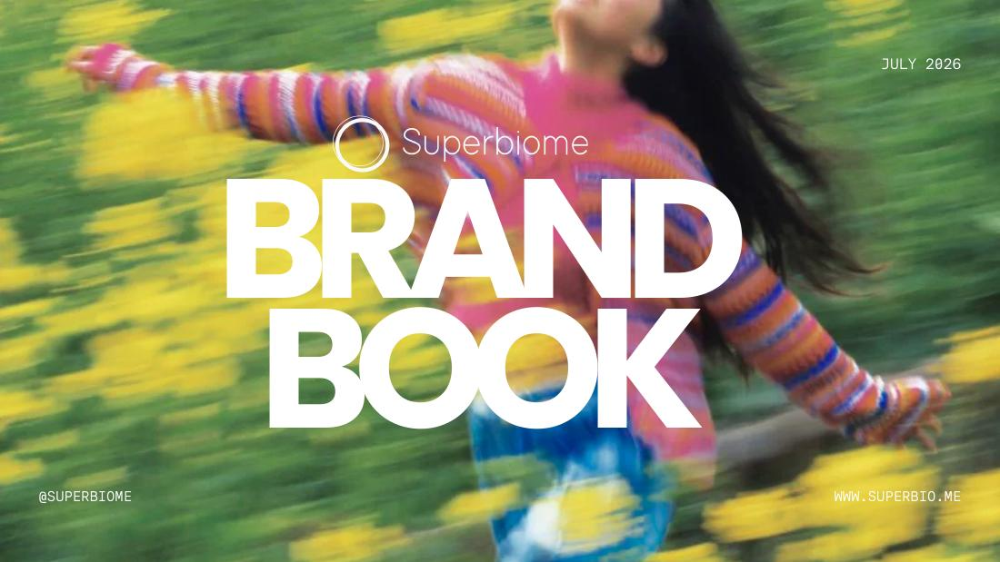
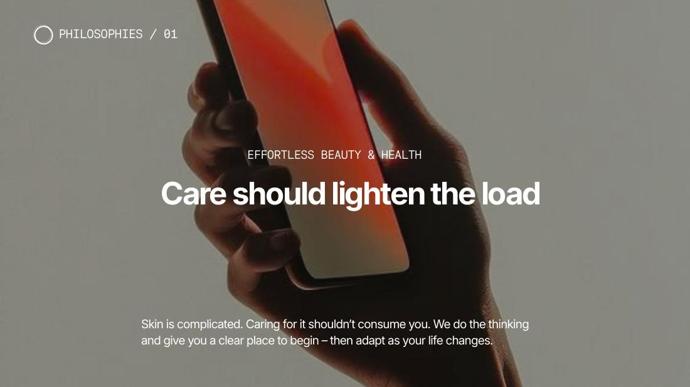
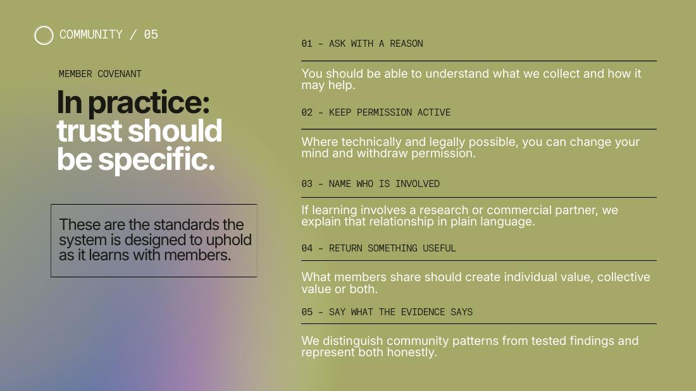
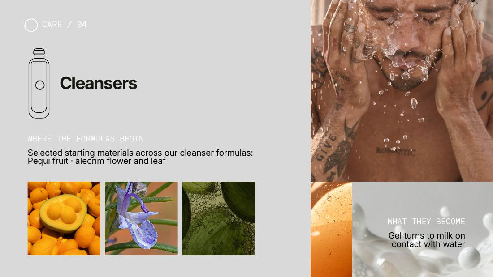
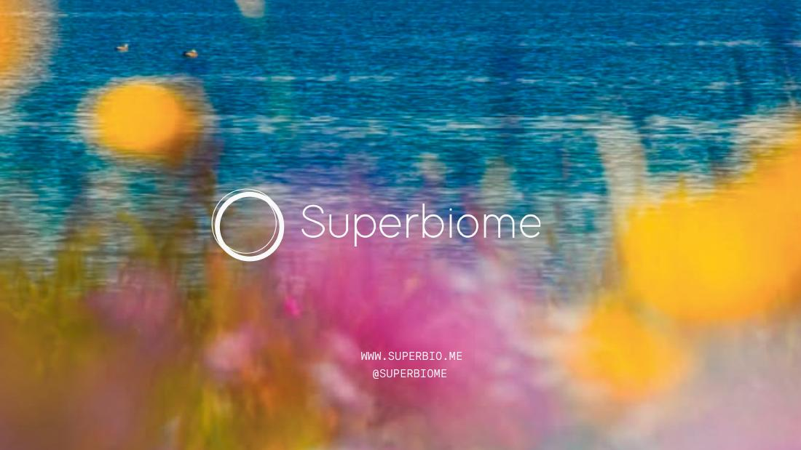

Milieu
to Superbiome.
Not a rebrand. A more valuable company hiding inside the original one.
I entered an early skincare startup and, in a compressed sprint, rebuilt its strategic, commercial and creative operating system: what the company was, what it sold, why it mattered and how it could grow.
Where it began: a test kit, customized formulas and a green skincare world.
Milieu centered on a mail-order skin swab, an app experience and customized skincare. The product was tangible. The larger company story—and the decisions required to support fundraising, growth and long-term value—were not yet resolved.
The brief could have been treated as branding. The real assignment was to determine what business this technology made possible.


The founder decisions came before the brand book.
My highest-leverage work was completed early: seeing the whole system, forcing the consequential choices and giving the company a future large enough to build toward.
A complete company system, made legible.
In less than a month, the decisions became brand architecture, positioning, membership, nomenclature, messaging, community mechanics, GTM, staffing logic and a 53-page brand world designed to influence how the company could be understood, funded and valued.






Compressed consequence.
The impressive fact is not that the sprint produced many documents. It is that the future-defining thinking arrived rapidly enough to change every document that followed.
Superbiome is the clearest evidence of what happens when I see upstream and downstream simultaneously—and why access to that judgment now happens inside explicit, protected formats.
See the two ways to work with me →